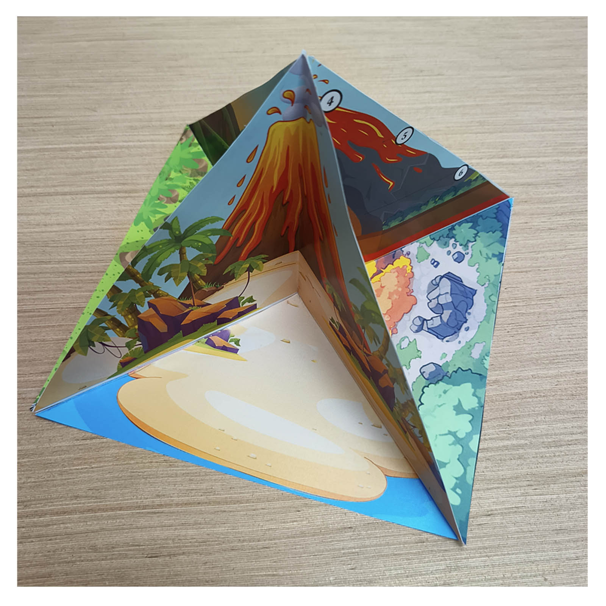
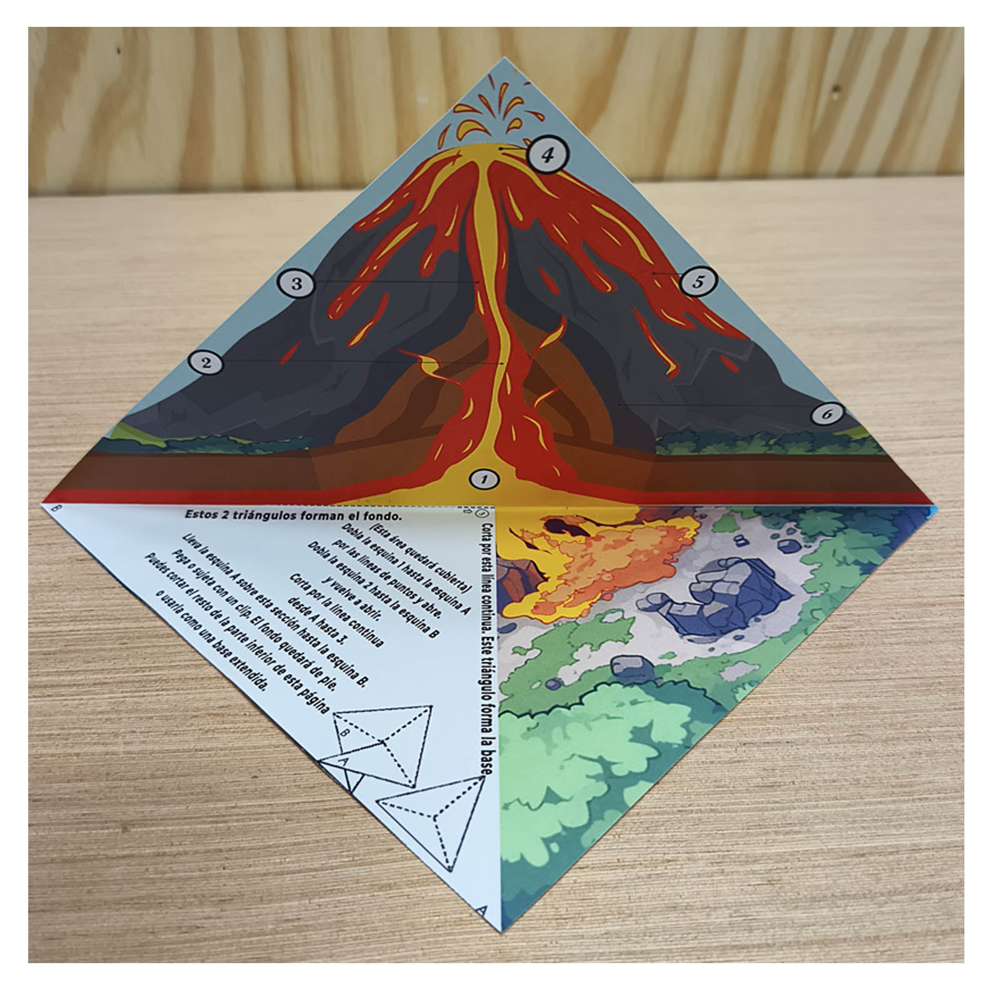
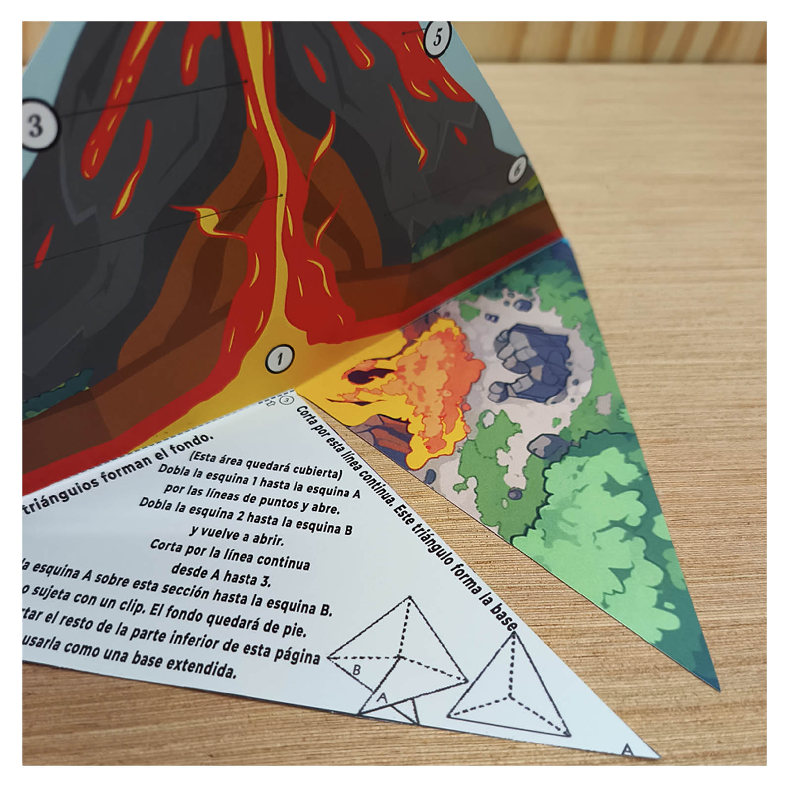
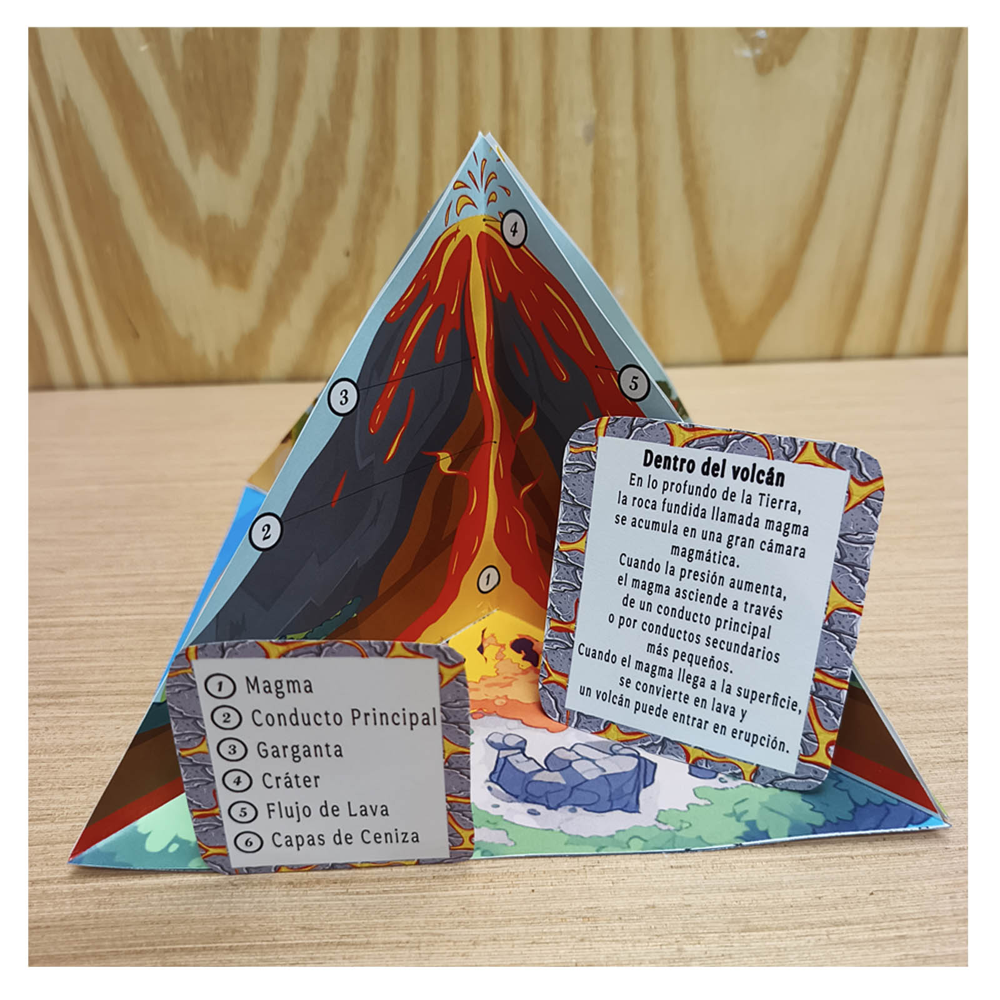
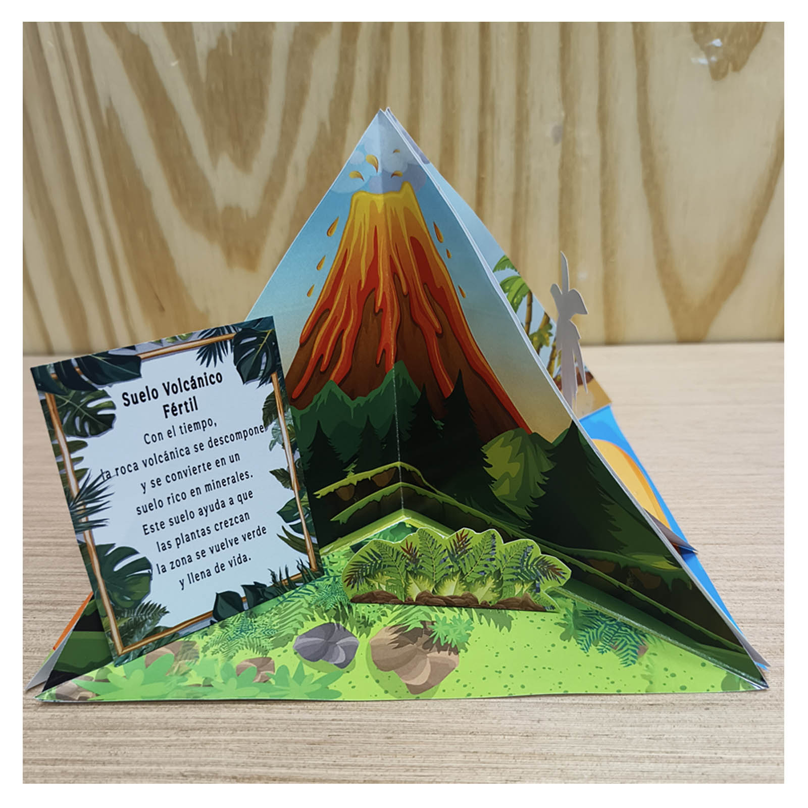
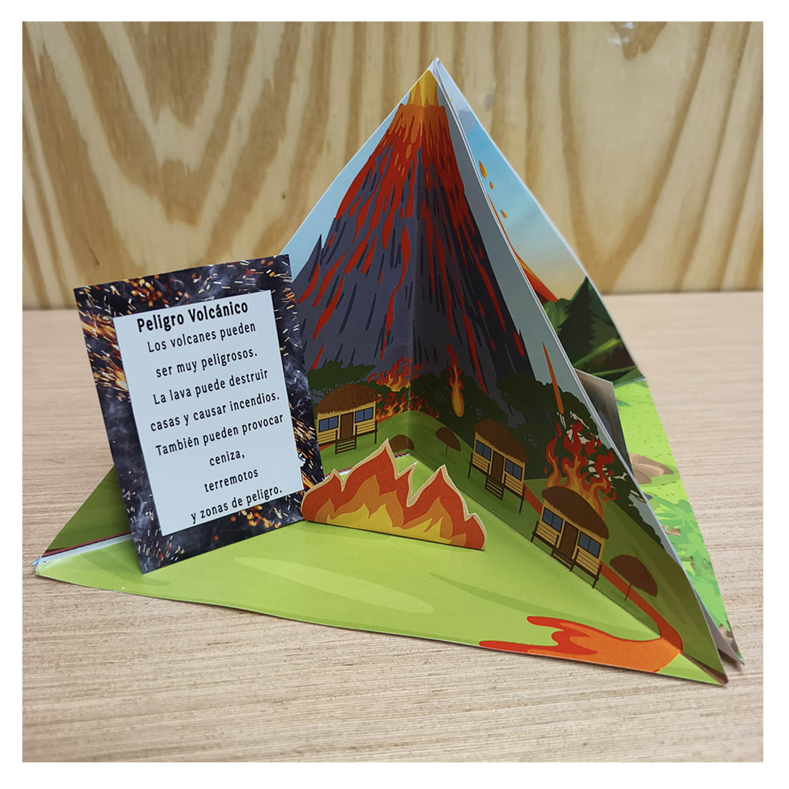

Maqueta de volcán fácil para niños
¿Buscas un proyecto escolar sobre los volcanes? Con esta plantilla en PDF puedes imprimir las piezas y construir una maqueta de volcán 3D de papel junto a tu hijo, en casa o en clase.
Sus cuatro secciones triangulares forman un volcán que cuenta cuatro historias: qué hay en su interior, cómo la lava crea nueva tierra, por qué el suelo volcánico puede ser fértil y qué peligros tiene una erupción.
Ver proyecto
Un volcán de papel con cuatro mundos por descubrir
Cada sección muestra una parte diferente de la historia. Al reunirlas, los niños crean una maqueta escolar que les ayuda a explicar tanto el interior del volcán como sus efectos en el paisaje.









¿Qué podemos aprender con esta maqueta de volcán?
Construirla es solo el comienzo. Cada sección ofrece un tema para observar, hacer preguntas y preparar una pequeña explicación para clase.
Dentro del volcán
Observa el magma, el conducto principal, la garganta, el cráter, el flujo de lava y las capas de ceniza. El corte transversal ayuda a entender cómo el magma puede subir hasta la superficie, donde pasa a llamarse lava.
La lava crea nueva tierra
Cuando la lava se enfría y se solidifica, forma roca. Con sucesivas erupciones, ese material puede ampliar la tierra existente e incluso formar islas volcánicas.
Suelo volcánico fértil
Con el tiempo, los materiales volcánicos se descomponen y pueden contribuir a formar suelos ricos en minerales. Esta sección permite hablar de las plantas, los árboles y la vida que puede crecer sobre esos suelos.
Peligro volcánico
Las erupciones también pueden causar daños. La escena con lava, fuego y casas ayuda a conversar sobre los peligros de los flujos de lava para las personas, las construcciones y la naturaleza.
¿Qué encontrarás en el proyecto?
- Un archivo digital PDF con las piezas para imprimir.
- Cuatro secciones triangulares para construir un volcán 3D de papel.
- Una sección del interior del volcán con sus partes numeradas.
- Escenas sobre la lava, la nueva tierra, el suelo fértil y los peligros volcánicos.
- Tarjetas educativas en español sobre las partes del volcán.
- Instrucciones para doblar y montar la maqueta.
Ideal para
- Un proyecto escolar sobre los volcanes.
- Clases de ciencias y ciencias naturales.
- Aprender las partes de un volcán de forma visual.
- Preparar una exposición con una maqueta hecha a mano.
- Familias que quieren construir juntas sin diseñar todas las piezas desde cero.
¿Cómo hacer una maqueta de volcán de papel?
Prepara una impresora, papel, tijeras y pegamento. Imprime la plantilla de volcán y sigue las instrucciones incluidas para recortar, doblar y montar las cuatro secciones.
Construye tu propia maqueta de volcán 3D
Descarga el PDF, imprime las piezas y comparte un rato de recortar, construir y descubrir cómo los volcanes transforman nuestro planeta.
$3.49 USD · Pago único · Descarga digital